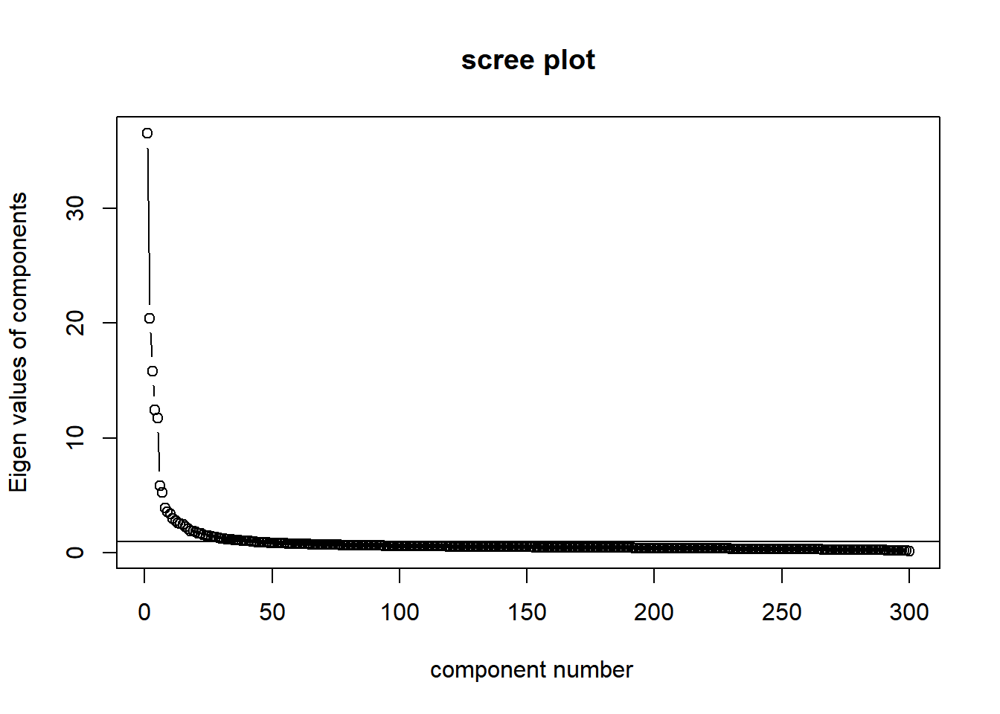
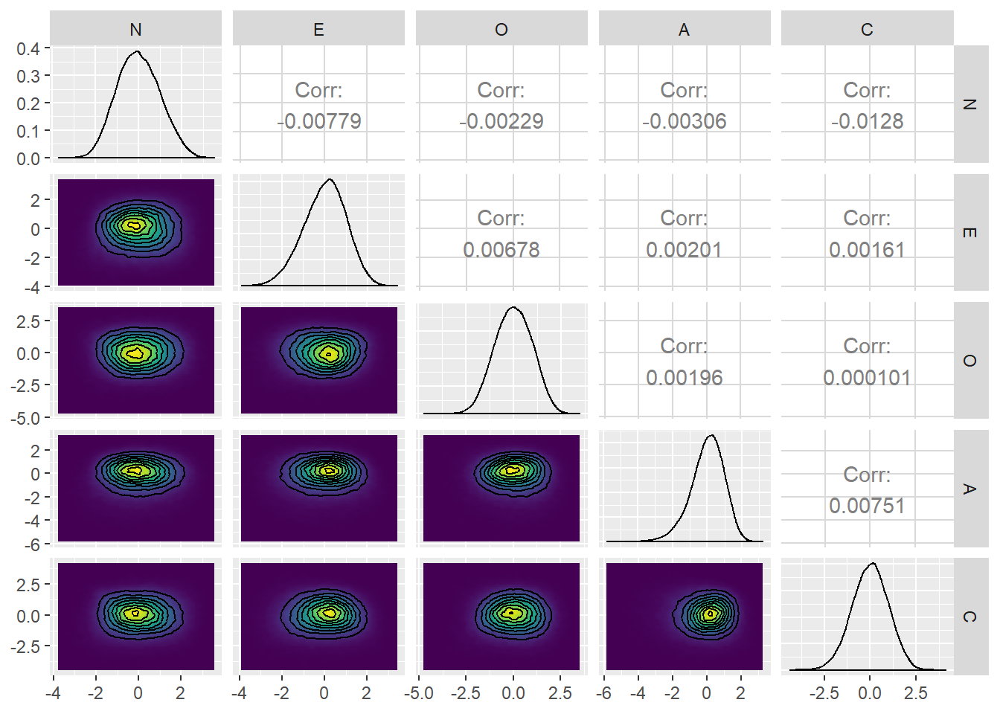

本ページで使用するパッケージがインストールされていない場合は，以下の コマンドをコンソールに入力してインスト―ルしてください。
install.packages("psych")
install.packages("GPArotation")
install.packages("tidyverse")
install.packages("GGally")必要なパッケージを読み込みます。
library(psych)
library(GPArotation)
library(tidyverse)
library(GGally)ここでは，Gerlachらにならい，Johnsonの パーソナリティに関する300項目の質問への回答データ (Johnson-300) を 読み込み，因子分析まで行います。
データファイルIPIP300.datはJohnson’s IPIP-NEO data repository (https://osf.io/tbmh5/) からダウンロードできます。 ここでは，このファイルを“C:/data/personality/IPIP300.dat” においてあるものとしています。以下のスクリプトのパスは適宜ご自身の環境に合わせて 書き換えてください。
IPIP300.datは固定長データ形式で納められています。
nmax <- 9999999 # 読み込む最大行数 最初は小さくして試す
dat.raw <- scan(file = "C:/data/personality/IPIP300.dat",
nmax = nmax,
what = character(), sep = "\n")
n.data <- length(dat.raw)
dat.matrix <- matrix(0,nrow = n.data, ncol = 300)
n.used.data <- 0
for (idx in 1:n.data){
# 回答があるのは34列目から333列目
# そこを抜き出す
a <- substring(dat.raw[[idx]],34, 333)
a.numeric <- as.numeric( unlist(strsplit(a,"")))
# 一つでも無回答 (0) がある回答者は除外する
if (!any(a.numeric == 0)) {
n.used.data <- n.used.data + 1
dat.matrix[n.used.data,] <- a.numeric
}
}
# 不要な行は削除
df_data <- as.data.frame(dat.matrix[1:n.used.data,])GerlachらはBig fiveモデルに基づいて因子数を5にしているようですが， 一応スクリープロットを見てみます。
VSS.scree(df_data)
第6固有値以降で減少幅が小さくなっていると見えなくもないでしょうか。
因子分析を行い，推定された因子スコアをデータフレームdf_scに格納します。
res_fa <- fa(df_data,
nfactors = 5,
rotate = "varimax",
fm = "ml"
)
fsc <- factor.scores(df_data,
f = res_fa,
method = "Harman")
df_sc <- data.frame(fsc$scores)因子とBig five modelのdomainを対応させ， 因子にラベルを付けます。 ここでは，1つめの質問項目が“N”に対応する， 2つめの質問項目が“E”に対応する，…という 知識を使ってそれらの項目に因子負荷が高い因子にラベルをつけます。 このやり方はヒューリスティックであり，うまくいかない こともあるので注意が必要です。(本来は全項目の因子負荷を 見て因子のラベルを吟味するべきです)
domains <- character(5)
domains[which.max(res_fa$weights[1,])] <- "N"
domains[which.max(res_fa$weights[2,])] <- "E"
domains[which.max(res_fa$weights[3,])] <- "O"
domains[which.max(res_fa$weights[4,])] <- "A"
domains[which.max(res_fa$weights[5,])] <- "C"
names(df_sc) <- domains
# 順番をGerlachらに合わせる
df_sc <- df_sc[,c("N","E","O","A","C")]推定された因子スコアをプロットしてみます。 ここではggplotとggpairsを使います。
# 2次元周辺分布の密度の等高線プロット用の関数
my_fn <- function(data, mapping, ...){
g <- ggplot(data = data, mapping = mapping) +
stat_density2d(aes(fill=..density..), geom="tile", contour = FALSE) +
geom_density2d(color = "black") +
scale_fill_gradientn(colours=viridis::viridis(100, option="viridis"))
g
}
ggp <- ggpairs(df_sc,
lower=list(continuous=my_fn))
print(ggp)
これはGerlach et al. (2018)のSupplementary Figure 2に対応する図です。 見比べると，分布の歪みの形状など一致していることが確認できます。
次の解析のため，因子スコアを以下のようにcsv形式で保存しておきます。
write.csv(df_sc, "C:/data/personality/fs_IPIP300.csv",
row.names = FALSE)このデータは，以下のように読み出せます。
df_data <- read.csv("C:/data/personality/fs_IPIP300.csv", header = TRUE)また，このcsvファイルはこちらにもアップロードしておきます。